Filter activations: full frozen VGG19 and every observed channel
Abstract
Learned convolutional filters and their responses to real images reveal different information. Inspect all 64 first-layer filters and all 2,944 channel maps from the complete frozen VGG19 network on the original Labrador and Kandinsky observations. Shared and local display scales make their different interpretations explicit.
Source example: examples/cpp/source/nn/1_convolutional_neural_networks/1.11_interpretability/filter_activations.cpp.
The method
A learned convolution kernel is a fixed numerical operator. Its post-ReLU activation depends on the observed image and all preceding layers. Shared within-layer maximum scaling preserves relative amplitude across observations/channels; per-channel maximum scaling preserves only each map's visible pattern.
No model or image fitting occurs. All 32 official pretrained convolution arrays remain unchanged while all 16 original-width convolutions and max pools execute. The report retains raw values, independent numeric checks and every channel without selecting visually attractive examples.
The concept diagram below is drawn by dm::graphics::Diagram. Its editable C++
source is the complete block below; regeneration uses the same datamunge toolchain
as the numerical examples. Exports consume the saved local SVG.
#include <dm/dm.hpp>
int main() {
std::filesystem::create_directories("build");
dm::graphics::Diagram diagram;
diagram.node("n0", {0.0, 0}, "Original JPEGs\n official frozen weights");
diagram.node("n1", {5.2, 0}, "All16convs\n original MAXpools");
diagram.node("n2", {10.4, 0}, "Every channel\n shared and local scales");
diagram.edge("n0", "n1").edge("n1", "n2");
diagram.save_svg("build/filter_activations_concept.svg");
}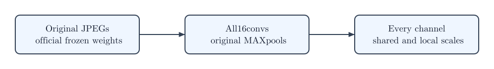
Genuine original images and official frozen VGG19 weights
Use the original Yellow Labrador photograph by Wikimedia user Elf (CC BY-SA 3.0) and Kandinsky's Composition VII (1913, public domain), the same source JPEGs as the style-transfer reports. Source hashes, original URLs, attribution and the pinned official Keras VGG19 no-top HDF5 hash remain in the preparation manifest. Center-square crop with integer bounds, then tensor Float32 legacy bilinear interpolation to 64 px and RGB/255. No synthetic substitute or learned input preprocessing is used.
All 16 original VGG19 convolutions execute with their original widths and max pools. The 32 weight/bias arrays contain 20,024,384 official ImageNet learned values. There is no classifier head, image optimization or fitting in this report; an optimizer is therefore unnecessary. Unlike the style-transfer variant, the pooling path is MAX rather than average. Raw activations are feature responses, not class attributions or predictions about the two observations.
Executed tensor architecture
Frozen VGG-19 uses zero constants only to probe the exact feature-extractor geometry here. Its constants are not learned leaves. The activation analyses below retain their actual pretrained weights.
This figure executes the inference configuration shown in the code, using a zero-valued shape probe without fitting or loading a checkpoint. Named stage boundaries group whole subgraphs where available; other nodes retain functional-layer detail. Exact batch-inclusive shapes and reachable parameter totals come from the trace. Shared linear scales map spatial dimensions and channel counts to blocks; the one-pixel visibility floor is disclosed in the legend. Labels use compact monospace text, rotate counterclockwise and sit beside their own glyphs. Arrows flow left to right; wide diagrams scroll at native size on the website.
#include <dm/dm.hpp>
int main() {
namespace n = dm::nn;
namespace m = n::models;
n::set_num_threads(2);
std::filesystem::create_directories("build");
m::TensorMap weights;
int input = 3;
for (int b = 0; b < 5; ++b)
for (int l = 0; l < m::FrozenVgg19::Depths[b]; ++l) {
const auto name = "block" + std::to_string(b + 1) + "_conv" + std::to_string(l + 1);
const auto width = m::FrozenVgg19::Widths[b];
weights.emplace(name + "_W", n::zeros({3, 3, input, width}));
weights.emplace(name + "_b", n::zeros({width}));
input = width;
}
const m::FrozenVgg19 vgg(weights);
n::Module architecture_model(
[&](const n::Tensor& image) { return m::VggVisualFeatures(vgg, image).activation.back(); },
"Filter activations: full frozen VGG19 and every observed channel");
n::ModelPlotOptions options;
options.style = n::ModelPlotStyle::Flow;
options.detail = n::ModelPlotDetail::Blocks;
options.labels = {.type = n::ModelPlotLabel::NameAndShape, .size = 12, .wrap = 24};
options.spacing = {.layer = 24, .lane = 12, .label = 8, .margin = 20};
options.sizing.spatial_size = 96;
options.sizing.channel_size = 42;
options.sizing.minimum_extent = 1;
options.opacity = .8;
const auto diagram = architecture_model.plot(n::zeros({1, 64, 64, 3}), options);
diagram.save_svg("build/filter_activations_architecture.svg");
std::print(
"{} displayed nodes; {} reachable learned values.\n",
diagram.nodes().size(),
diagram.parameter_count());
}57 displayed nodes; 0 reachable learned values.
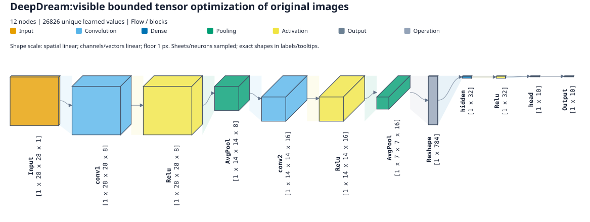
Display scaling has a measurable effect
A constant 2 channel beside a constant 4 channel appears half-bright under a shared maximum 4. Per-channel normalization makes both white, and can therefore make a weak response look as strong as a large one. Zero channels stay black under either rule; constant positive channels must remain visible. Channel indices are metadata and are never re-ranked to choose attractive maps.
#include <dm/dm.hpp>
int main() {
namespace n = dm::nn;
namespace m = n::models;
const auto x = n::from_vector(std::vector<float>{0, 2, 0, 2, 0, 4, 0, 4}, {2, 1, 2, 2});
const auto shared = m::VisualChannelImages(x, false),
local = m::VisualChannelImages(x, true);
std::print(
"Declared observation-major/channel-minor shared images {},per-channel images {}.\n",
shared.reshape({4, 2}), local.reshape({4, 2}));
auto plot = dm::graphics::RPlot::create();
plot.points(n::arange(0, 4).to_vector<double>(),
n::mean(shared, {1, 2, 3}).to_vector<double>(), "shared",
{37, 99, 235})
.points(n::arange(0, 4).to_vector<double>(),
n::mean(local, {1, 2, 3}).to_vector<double>(), "local",
{220, 38, 38})
.title("Declared zero,weak and strong channels")
.x_label("observation/channel image ordinal")
.y_label("display intensity")
.y_limits(0, 1.2);
plot.save_svg("build/filter_activations_scaling.svg");
}Declared observation-major/channel-minor shared images float32[4, 2] [[0, 0], [0.5, 0.5], [0, 0], [1, 1]],per-channel images float32[4, 2] [[0, 0], [1, 1], [0, 0], [1, 1]].
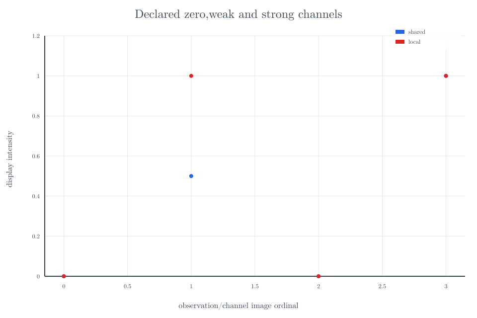
Both actual observed inputs
The original source archive and JPEGs are already prepared by the style reports. The following program directly decodes those JPEGs through the canonical tensor image loader and shows the exact 64 px observations used by VGG19. The independent original-example run uses the same serialized inputs and includes 640 host first- convolution corner/center probes across both images and all 64 first-layer channel.
#include <dm/dm.hpp>
int main() {
namespace n = dm::nn;
namespace m = n::models;
std::filesystem::path cache;
if (const auto *p = std::getenv("DATAMUNGE_DATA_DIR"))
cache = p;
else if (const auto *p = std::getenv("XDG_CACHE_HOME"))
cache = std::filesystem::path(p) / "datamunge/datasets";
else
cache = std::filesystem::path(std::getenv("HOME")) / ".cache/datamunge/datasets";
std::filesystem::path assets = cache / "style_transfer";
if (const auto *v = std::getenv("DATAMUNGE_STYLE_DIR"))
assets = v;
else
dm::datasets::prepare_example_data("style", assets.string());
const auto dog = m::LoadStyleImage(assets / "content.jpg", 64),
painting = m::LoadStyleImage(assets / "style.jpg", 64);
const auto rgb = n::concat({dog, painting}, 0);
n::save_npz("build/filter_activations_inputs.npz", {{"rgb", rgb}});
std::print("Actual RGB shape {},original JPEG source {} and {};unit-channel means {}.\n",
rgb.shape(), (assets / "content.jpg").string(), (assets / "style.jpg").string(),
n::mean(rgb, {1, 2}));
n::save_image_grid(rgb, "build/filter_activations_inputs.png", 2, 0, 1, 2, .8, 4);
}Actual RGB shape [2, 64, 64, 3],original JPEG source /home/jordan/.cache/datamunge/datasets/style_transfer/content.jpg and /home/jordan/.cache/datamunge/datasets/style_transfer/style.jpg;unit-channel means float32[2, 3] [[0.649975, 0.662895, 0.477077], [0.553036, 0.44998, 0.394347]].
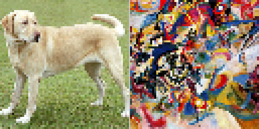
Every full-width tap, all 2,944 channel maps and all 64 learned first filters
Tap block1_conv1, block2_conv2, block3_conv4, block4_conv4, block5_conv4:
spatial sides 64/32/16/8/4, widths 64/128/256/512/512. All 16 convolutions and intervening
max pools actually execute; these are not analytical shapes. Single-image versus
batched Float32 feature values use the original example's absolute 0.005 tolerance;
repeat execution and all learned constants must remain exact. Preserve all 2,944
channel maps across two images. For each layer, show every channel with one
shared maximum across both images and all channels of that layer, and then with a
separate observation/channel maximum. Different layers have different units.
Each mosaic is observation-major: all dog channels first, then all painting channels. Sixteen tiles per row; channel c occupies row floor(c/16), column c mod 16 inside that observation's block. Low-resolution deep maps use explicit integer pixel enlargement. All original raw maps and exact normalizing peaks remain saved. Across both observations, the final block has 708 all-zero channels out of 1,024; black deep-map tiles are actual zero responses, not omitted observations. The third-block shared peak is 15,109.4736, so weak channels can look dim under the honest shared scale and vivid under local scaling.
The learned first-layer filter display has 64 kernels, three-by-three RGB weights, one shared signed absolute scale and grey zero; it is not an optimized input or attribution map.
#include <dm/dm.hpp>
int main() {
namespace n = dm::nn;
namespace m = n::models;
n::set_num_threads(2);
std::filesystem::path cache;
if (const auto *p = std::getenv("DATAMUNGE_DATA_DIR"))
cache = p;
else if (const auto *p = std::getenv("XDG_CACHE_HOME"))
cache = std::filesystem::path(p) / "datamunge/datasets";
else
cache = std::filesystem::path(std::getenv("HOME")) / ".cache/datamunge/datasets";
std::filesystem::path assets = cache / "style_transfer";
if (const auto *v = std::getenv("DATAMUNGE_STYLE_DIR"))
assets = v;
else
dm::datasets::prepare_example_data("style", assets.string());
const auto tensors = m::LoadTensorMap((assets / "vgg19.npz").string());
const m::FrozenVgg19 model(tensors);
std::vector<std::pair<std::string, n::Tensor>> before;
for (const auto &[key, value] : model.constants)
before.push_back({key, value.clone()});
n::Tensor rgb;
for (const auto &[key, value] : n::load_npz("build/filter_activations_inputs.npz"))
if (key == "rgb")
rgb = value;
n::NoGradGuard guard;
const auto features = m::VggVisualFeatures(model, rgb),
repeat = m::VggVisualFeatures(model, rgb),
single = m::VggVisualFeatures(model, n::slice_axis(rgb, 0, 0, 1));
n::NamedTensors arrays{{"rgb", rgb},
{"centered", features.centered},
{"first_pre", features.first_pre},
{"first_kernel", tensors.at("block1_conv1_W")},
{"first_bias", tensors.at("block1_conv1_b")}};
auto max_repeat = n::zeros({}), max_single = n::zeros({});
int channels = 0;
std::print("| canonical tap | actual shape | shared maximum | allzero channels across both "
"images |\n|---|---|---:|---:|\n");
for (int layer = 0; layer < 5; ++layer) {
const auto &x = features.activation[layer];
channels += 2 * x.size(3);
max_repeat = n::maximum(max_repeat, n::max(n::abs(x - repeat.activation[layer])));
max_single = n::maximum(
max_single, n::max(n::abs(n::slice_axis(x, 0, 0, 1) - single.activation[layer])));
const auto maxima = n::max(x, {1, 2});
std::print("| {} | {} | {:.9g} | {} |\n", features.names[layer], x.shape(),
n::max(x).item(), n::sum(n::equal(maxima, 0.).to(n::DType::Int32)).item());
arrays.push_back({features.names[layer], x});
arrays.push_back({features.names[layer] + "_channel_maxima", maxima});
arrays.push_back(
{features.names[layer] + "_mean", n::mean(x.to(n::DType::Float64), {1, 2})});
arrays.push_back({features.names[layer] + "_positive",
n::mean(n::greater(x, 0.).to(n::DType::Float64), {1, 2})});
for (bool local : {false, true}) {
const auto maps = m::VisualChannelImages(x, local);
const auto name = "filter_activations_layer" + std::to_string(layer) +
(local ? "_local" : "_shared") + ".png";
n::save_image_grid(maps, "build/" + name, 16, 0, 1, 2, .1,
std::max(1, 32 / int(x.size(1))));
std::filesystem::copy_file("build/" + name, "figures/" + name,
std::filesystem::copy_options::overwrite_existing);
}
}
bool immutable = true;
for (const auto &[key, value] : before)
immutable = immutable && n::all(n::equal(value, model.constants.at(key))).item<bool>();
if (max_repeat.item() != 0 || max_single.item() > .005 || !immutable || channels != 2944)
return 1;
std::print("All{}actual channel maps;repeat {},single/batch max "
"{:.9g}within.005;all32official constants immutable.\n",
channels, max_repeat.item(), max_single.item());
n::save_npz("build/filter_activations_features.npz", arrays);
const auto kernel =
n::transpose(n::reverse(tensors.at("block1_conv1_W"), {2}), {3, 0, 1, 2});
const auto peak = n::max(n::abs(kernel));
n::save_image_grid(kernel / (peak * 2) + .5, "build/filter_activations_filters.png", 8, 0, 1,
3, .8, 12);
std::print("All64learnedRGBdisplay filters share signed absolute peak {:.9g};BGRinputweight "
"channels reversed ONLYforRGBdisplay.\n",
peak.item());
}| canonical tap | actual shape | shared maximum | allzero channels across both images |
|---|---|---|---|
| block1_conv1 | [2, 64, 64, 64] | 652.734863 | 0 |
| block2_conv2 | [2, 32, 32, 128] | 5067.97559 | 0 |
| block3_conv4 | [2, 16, 16, 256] | 15109.4707 | 0 |
| block4_conv4 | [2, 8, 8, 512] | 4360.46973 | 42 |
| block5_conv4 | [2, 4, 4, 512] | 196.842438 | 708 |
All2944actual channel maps;repeat 0,single/batch max 0within.005;all32official constants immutable. All64learnedRGBdisplay filters share signed absolute peak 0.650995195;BGRinputweight channels reversed ONLYforRGBdisplay.
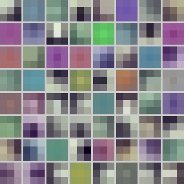
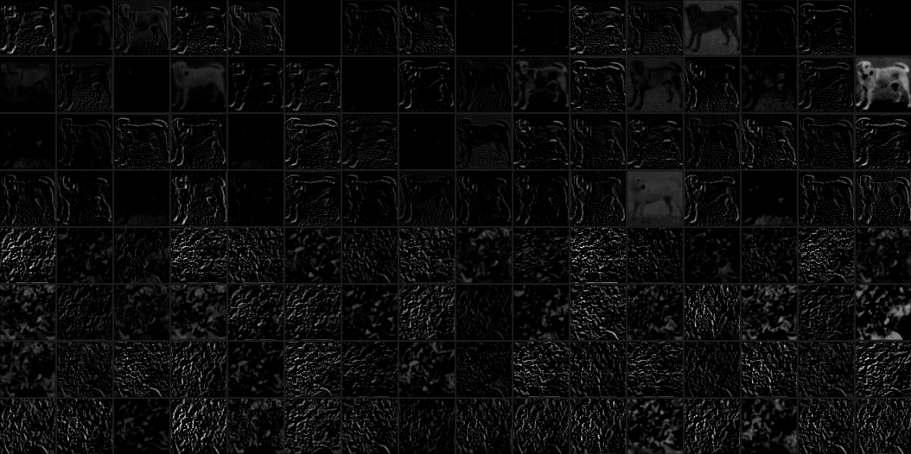
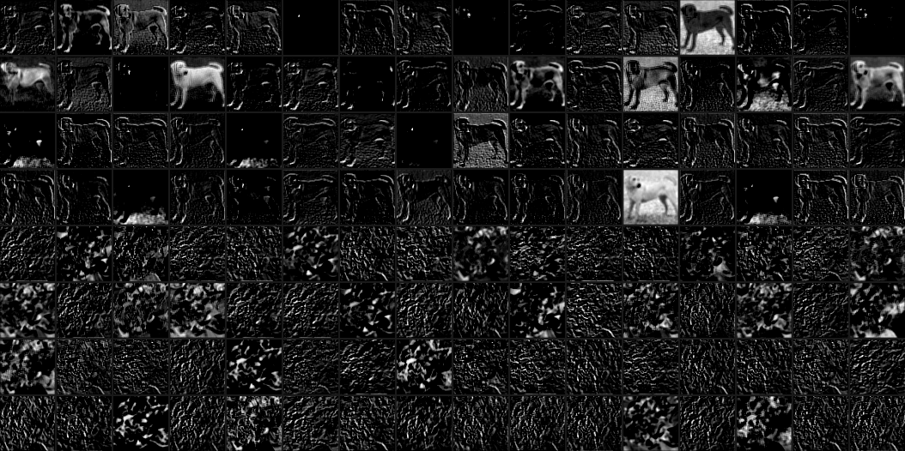
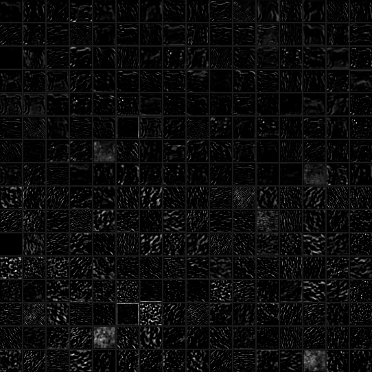
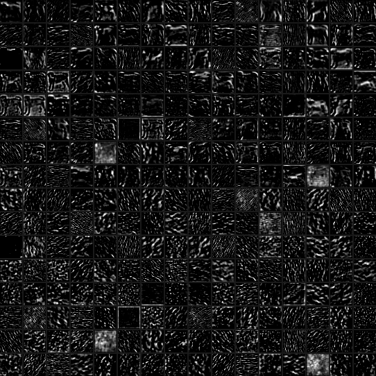
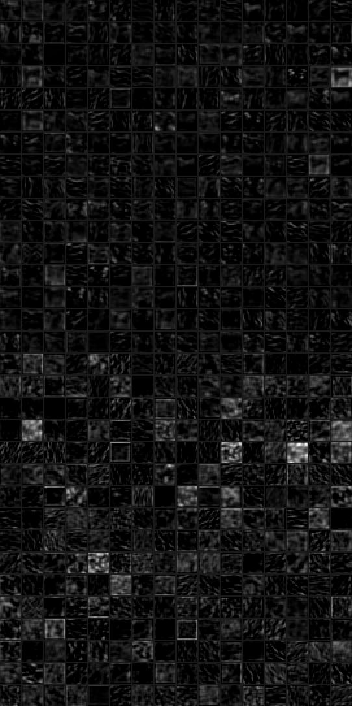
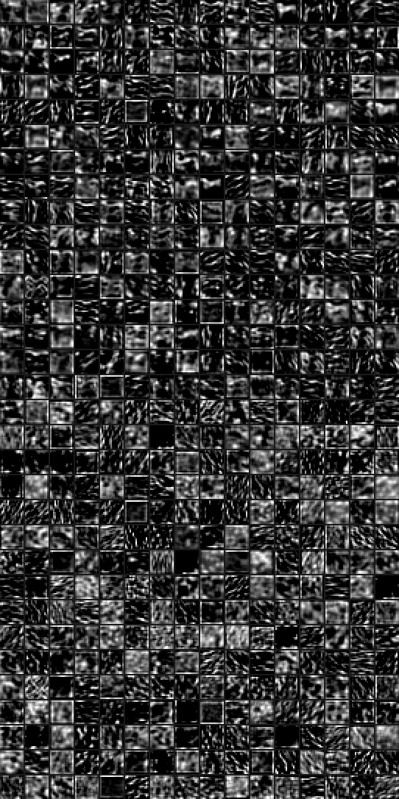
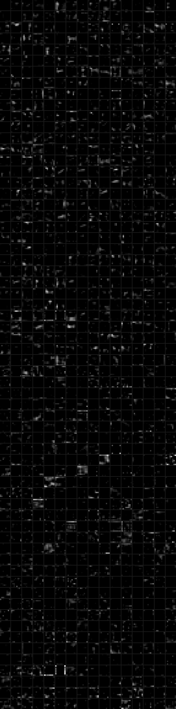
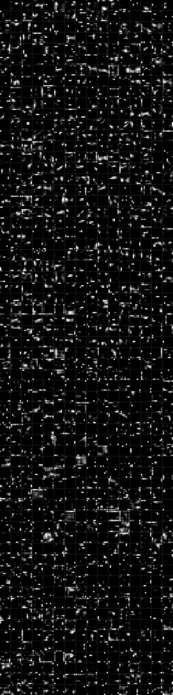
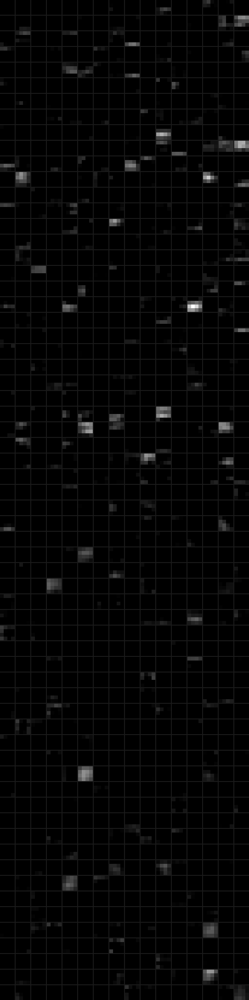
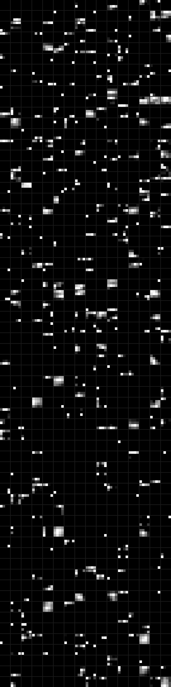
Every per-channel response and sparsity summary
Plot every channel's actual mean activation and positive-pixel fraction for both observations. Shared display contrast preserves within-layer amplitude; local display contrast exposes patterns while discarding that amplitude. Neither response size nor visual texture identifies a class explanation. The first-convolution independent host probes, all original input/preprocessing values and every layer are also checked against an independent TensorFlow model.
#include <dm/dm.hpp>
int main() {
namespace n = dm::nn;
std::map<std::string, n::Tensor> a;
for (const auto &[key, value] : n::load_npz("build/filter_activations_features.npz"))
a.emplace(key, value);
auto left = dm::graphics::RPlot::create(), right = dm::graphics::RPlot::create();
const std::vector<std::string> names{"block1_conv1", "block2_conv2", "block3_conv4",
"block4_conv4", "block5_conv4"};
const std::vector<dm::graphics::RGB> colors{
{37, 99, 235}, {220, 38, 38}, {22, 163, 74}, {147, 51, 234}, {234, 88, 12}};
std::print("| layer | dog mean positive fraction | painting mean positive fraction | "
"dog/painting mean response |\n|---|---:|---:|---|\n");
int offset = 0;
for (int layer = 0; layer < 5; ++layer) {
const auto mean = a.at(names[layer] + "_mean"),
positive = a.at(names[layer] + "_positive");
std::print("| {} | {:.9g} | {:.9g} | {:.9g}/{:.9g} |\n", names[layer],
n::mean(n::select(positive, 0, 0)).item(),
n::mean(n::select(positive, 0, 1)).item(),
n::mean(n::select(mean, 0, 0)).item(), n::mean(n::select(mean, 0, 1)).item());
const auto index = n::arange(offset, offset + mean.size(1)).to_vector<double>();
left.lines(index, n::select(positive, 0, 0).to_vector<double>(), names[layer],
colors[layer]);
right.lines(index, n::select(positive, 0, 1).to_vector<double>(), names[layer],
colors[layer]);
offset += mean.size(1);
}
left.title("Every dog channel positive fraction")
.x_label("all1472channels,layer-concatenated")
.y_label("positive spatial fraction")
.y_limits(0, 1.15);
right.title("Every painting channel positive fraction")
.x_label("same channel ordinal and layer order")
.y_label("positive spatial fraction")
.y_limits(0, 1.15);
auto layout = dm::graphics::RLayout::create(1, 2);
layout.add(left).add(right).size(1100, 500).fit_panels().save_svg(
"build/filter_activations_statistics.svg");
}| layer | dog mean positive fraction | painting mean positive fraction | dog/painting mean response |
|---|---|---|---|
| block1_conv1 | 0.457344055 | 0.499076843 | 20.5457553/35.7912114 |
| block2_conv2 | 0.420776367 | 0.412872314 | 135.604305/259.46818 |
| block3_conv4 | 0.665237427 | 0.712997437 | 702.487698/1289.37706 |
| block4_conv4 | 0.202148438 | 0.158508301 | 105.030657/84.8190978 |
| block5_conv4 | 0.104980469 | 0.0709228516 | 3.05068921/1.46050624 |
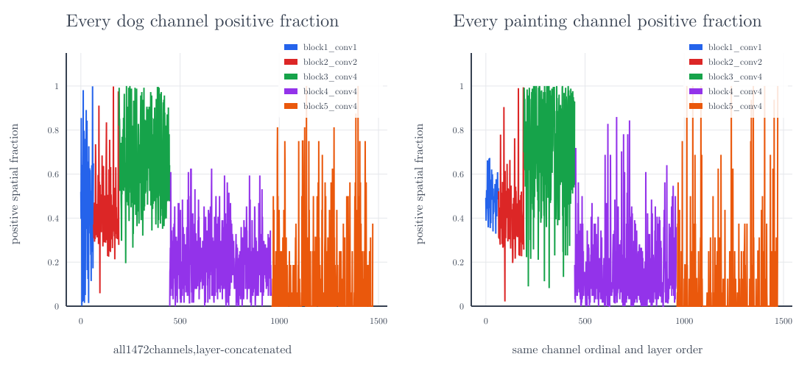
Regenerate adjacent views from this run
#include <filesystem>
int main() {
std::filesystem::copy_file("build/filter_activations_layer0_local.png", "build/export_filter_activations_layer0_local.png",
std::filesystem::copy_options::overwrite_existing);
}#include <filesystem>
int main() {
std::filesystem::copy_file("build/filter_activations_layer0_shared.png", "build/export_filter_activations_layer0_shared.png",
std::filesystem::copy_options::overwrite_existing);
}#include <filesystem>
int main() {
std::filesystem::copy_file("build/filter_activations_layer1_local.png", "build/export_filter_activations_layer1_local.png",
std::filesystem::copy_options::overwrite_existing);
}#include <filesystem>
int main() {
std::filesystem::copy_file("build/filter_activations_layer1_shared.png", "build/export_filter_activations_layer1_shared.png",
std::filesystem::copy_options::overwrite_existing);
}#include <filesystem>
int main() {
std::filesystem::copy_file("build/filter_activations_layer2_local.png", "build/export_filter_activations_layer2_local.png",
std::filesystem::copy_options::overwrite_existing);
}#include <filesystem>
int main() {
std::filesystem::copy_file("build/filter_activations_layer2_shared.png", "build/export_filter_activations_layer2_shared.png",
std::filesystem::copy_options::overwrite_existing);
}#include <filesystem>
int main() {
std::filesystem::copy_file("build/filter_activations_layer3_local.png", "build/export_filter_activations_layer3_local.png",
std::filesystem::copy_options::overwrite_existing);
}#include <filesystem>
int main() {
std::filesystem::copy_file("build/filter_activations_layer3_shared.png", "build/export_filter_activations_layer3_shared.png",
std::filesystem::copy_options::overwrite_existing);
}#include <filesystem>
int main() {
std::filesystem::copy_file("build/filter_activations_layer4_local.png", "build/export_filter_activations_layer4_local.png",
std::filesystem::copy_options::overwrite_existing);
}#include <filesystem>
int main() {
std::filesystem::copy_file("build/filter_activations_layer4_shared.png", "build/export_filter_activations_layer4_shared.png",
std::filesystem::copy_options::overwrite_existing);
}Conclusion
Every learned first filter and all five full-width activation levels remain inspectable on genuine observations. Raw response statistics and explicit normalization prevent weak locally rescaled maps from being treated as strong evidence. These are feature and weight inspections, not classifier-head predictions or causal explanations.
References
- [Simonyan and Zisserman (2014/2015), Very Deep Convolutional Networks](https://arxiv.org/abs/1409.1556).
- [Official Keras VGG19 documentation](https://keras.io/api/applications/vgg/).
- [Elf, Yellow Labrador Looking, CC BY-SA 3.0](https://commons.wikimedia.org/wiki/File:YellowLabradorLooking_new.jpg).
- [Kandinsky Composition VII original tutorial mirror](https://storage.googleapis.com/download.tensorflow.org/example_images/Vassily_Kandinsky%2C_1913_-_Composition_7.jpg).